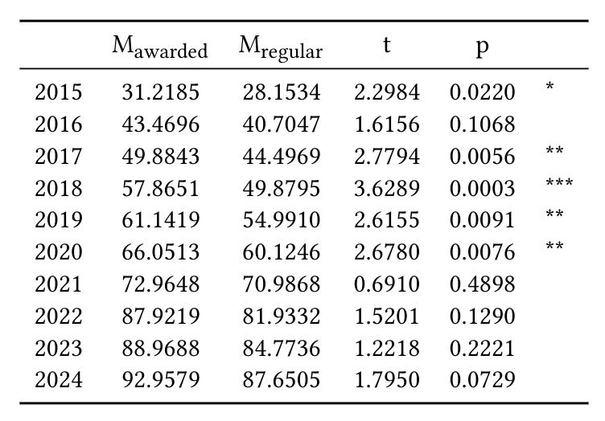
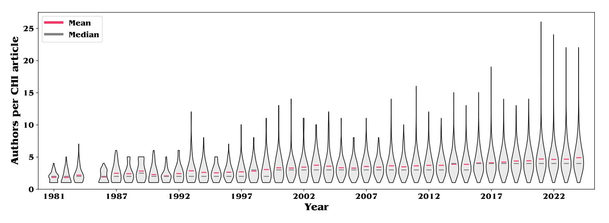

Past, Present, and Future of Citation Practices in HCI
Abstract
Science is a complex system comprised of many scientists who individually make collective decisions that, due to the size and nature of the academic system, largely do not affect the system as a whole. However, certain decisions at the meso-level of research communities, such as the Human-Computer Interaction (HCI) community, may result in deep and long-lasting behavioral changes in scientists. In this article, we provide evidence on how a change in editorial policies introduced at the ACM CHI Conference in 2016 launched the CHI community on an expansive path, denoted by a year-by-year increase in the mean number of references included in CHI articles. If this near-linear trend continues undisrupted, an article in CHI 2030 will include on average almost 130 references. Our meta-research provides insights into how the nature and meaning of citation practices in HCI have changed, influenced by factors such as digital accessibility of resources and academic pressures. The observed trend towards more citations reflects a citation culture where quantity is prioritized over quality, contributing to both author and peer reviewer fatigue. This article underscores the value of meta-research for research communities and the profound impact that meso-level policy adjustments have on the evolution of scientific fields and disciplines, urging stakeholders to carefully consider the broader implications of such changes.
The mean number of references included in CHI articles has increased since 2016. This growth was enabled by a decision to no longer include the reference section in the overall page count. Since 2016, the CHI community has clearly entered a novel trajectory, with a year-by-year growth of the mean number of references included in CHI articles.
The maximum number of references has exploded in recent years, which contributes to the rise in the average number of references per article. Up until 2017, it was not uncommon for CHI articles to be accepted with less than 10 references.
If the trend continues undisrupted, an article will include on average 130 references at CHI 2030.
This meta-research shows how a change in editorial policies can result in a change in citation behavior of researchers. Clearly, the CHI community is, today, in a state that is defined by hypercompetition and accelerating in pace. It was the top-down policy change that took place in the year 2016 that opened the floodgates, allowing authors to cite more and more works in their articles.
Looking at awards presented at the ACM CHI conference, one can see that past awards were systematically presented to articles with above-average number of references. This, together with the wording in the 2016 CfP, may have contributed to nudging the CHI community on its current expansive path.

Additional changes in citation practices are noteworthy. For instance, the mean number of authors in CHI articles has increased, from an average of 1.85 authors per CHI article in 1981 to an average of 5.17 authors per article in 2024. However, this increase in authors is not proportional to the increase in the mean number of references.

Enabled by the decision to no longer restrict references, literature reviews have become much more common at CHI. Especially systematic literature reviews, which before 2015 did not exist at CHI, have seen an increase (spurred also by the COVID-19 pandemic).
Citations to ArXiv have become more acceptable in the CHI commmunity. This, of course, is also due to an influence of other fields, such as machine learning, where it is common to upload a pre-print before formal review. My analysis of references at CHI shows that over one third of the articles published at CHI'24 contain at least two citations to arXiv. ArXiv pre-print citations come with their own set of challenges, such as authors citing the pre-print even though an article has formally been accepted at a journal or conference.
Implications
The above expansive path of the CHI community is problematic, for several reasons.
- First, I argue that 130 references per article is too many to thoroughly screen during the peer review process. A high number of references increases the cognitive load on peer reviewers, contributing to reviewer fatigue. This only adds to the already high amount of peer review fatigue, with conferences struggling to recruit high-quality reviewers. Peer review is the backbone of academic rigor, and if reviewers only give a cursory glance at the reference section, the integrity of the peer review process is compromised.
- Second, the number of references included in CHI articles serves as a signal to the CHI community. Peer pressure and herd mentality suggest that if the average number of references is high, authors feel compelled to include a similar number of references in their articles. Deviations from this norm are likely to be viewed negatively by peer reviewers, creating a spiraling pattern of year-by- year increasing academic pressure and competition. This spiraling pattern contributes to author dissatisfaction and fatigue.
- Third, despite the shift away from awarding best paper awards and honorable mentions to high-reference articles, the overall rise in the number of references still sends the wrong message to junior members of the CHI community. Today, PhD students in HCI are faced with a seemingly insurmountable and overwhelming amount of literature work, which distracts them from focusing on developing their own research skills and expertise.
- Fourth, the inflation of citations diminishes the value of each citation. A citation today does not carry the same weight it did in the past. This is similar to how early search engine optimization efforts devalued the significance of web links. The increasing number of citations reduces their impact and can lead to an overload of less meaningful references.
- Last, the high number of references makes it easier for bad actors to commit fraud. In an environment of hypercompetition and “perverse” incentives [6 ], academic fraud is surprisingly common [ 31 ]. With no clear trade-off cost between citations in an article, the reference section can be expanded arbitrarily, facilitating citation manipulation. This can include self-citation [3 ], author collusion in citation cartels [ 12 , 15 ], and even the purchasing of citations [ 10]. The high number of references that, likely, undergo only cursory peer review, makes it harder to detect such unethical and fraudulent research practices.
Conclusion
This article presented meta-research on citation practices at the ACM CHI Conference, the top conference in the field of Human-Computer Interaction. Our segmented regression analysis provided clear evidence of a change of pace in academic working in the CHI community, indicative of broader trends in HCI. We provided empirical evidence of a year-by-year increase in number of references included in CHI articles. The field’s excessive citation practices were enabled by a policy decision that lifted page restrictions on the reference section of CHI articles. The implications of such meso-level policy decisions can be profound. This study highlights the value of meta-research for HCI and the CHI community. More meta-research is needed to carefully consider the broader impact of policy decisions and to provide clear recommendations for stakeholders. It is time for the HCI community to pause and reflect on its citation practices, and constructively discuss solutions. A different pathway forward is needed to make the HCI field sustainable again.
Citation (Bibtex)
@misc{oppenlaender2024past,
title={Past, Present, and Future of Citation Practices in HCI},
author={Jonas Oppenlaender},
year={2024},
eprint={2405.16526},
archivePrefix={arXiv},
primaryClass={cs.HC}
}